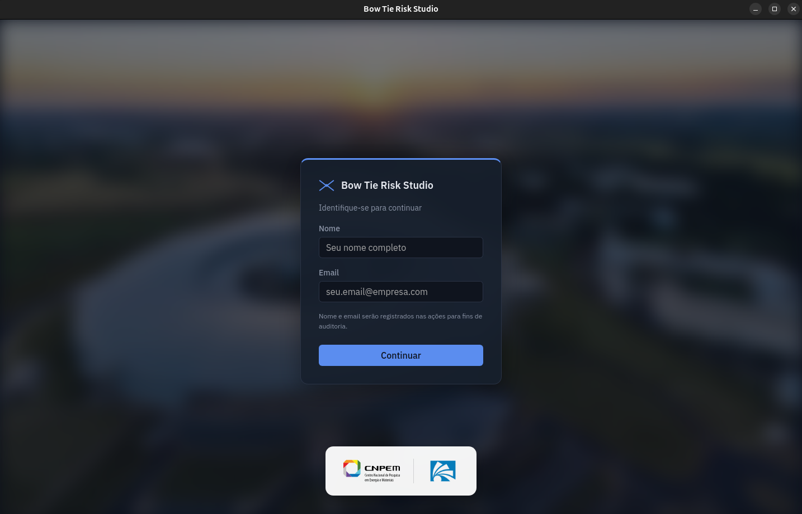
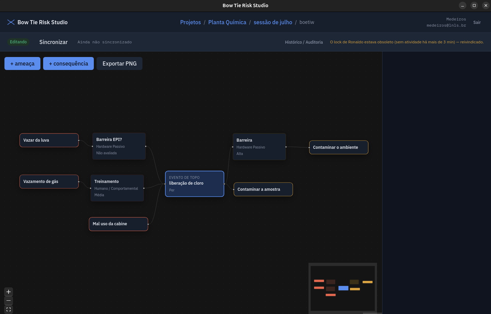

Sumário
Visão geral
O BTR Studio (BowTieRisk Studio) é um aplicativo para construir e manter análises de risco pelo método Bow Tie (“gravata borboleta”). Ele roda no seu computador, guarda tudo em arquivos numa pasta, e permite que uma equipe trabalhe nos mesmos projetos através do SharePoint ou OneDrive, sem servidor.
O que é um diagrama Bow Tie
Um Bow Tie mostra, numa única figura, como um perigo pode levar a um evento de topo (a perda de controle), o que pode causá-lo, o que pode resultar dele, e quais barreiras existem de cada lado.
Como o app organiza o trabalho
Uma planta, unidade ou estudo. Cada projeto é um arquivo .db próprio e tem suas categorias, tipos de barreira e aviso.
Um agrupamento dentro do projeto, por exemplo uma reunião de análise ou uma etapa (“Análise — Julho/2026”).
Um diagrama, com um perigo e um evento de topo, suas ameaças, consequências e barreiras.
Instalação
O BTR Studio é portátil: não tem instalador. Você baixa uma pasta, coloca onde quiser e abre o programa de dentro dela. Os projetos ficam guardados nessa mesma pasta.
Requisitos
| Sistema | O que precisa |
|---|---|
| Windows 10 ou 11 (64 bits) | Nada além do sistema. O componente WebView2, usado para desenhar a interface, já vem no Windows 11 e nas versões atualizadas do Windows 10. |
| Linux (64 bits) | Biblioteca WebKitGTK 4.1 (no Debian/Ubuntu, pacote libwebkit2gtk-4.1-0). |
| Uso em equipe | Uma biblioteca do SharePoint ou pasta do OneDrive compartilhada, sincronizada no computador de cada pessoa. |
Windows
- Baixe o pacote
Na página inicial, clique em Baixar para Windows. Você recebe o arquivo
BTR-Studio-windows-portatil.zip. - Extraia o ZIP
Clique com o botão direito no arquivo e escolha Extrair tudo…. Para uso em equipe, extraia direto dentro da pasta compartilhada (veja a seção seguinte). Não rode o programa de dentro do ZIP sem extrair.
- Confira a pasta
Ela deve ter esta estrutura:
BTR-Studio/ ├── BTR-Studio.exe o programa ├── bancos/ os projetos: um arquivo .db por projeto ├── backups/ cópias automáticas a cada sincronização └── LEIAME.txt - Abra o
BTR-Studio.exeDê dois cliques. Se preferir, crie um atalho na Área de Trabalho (botão direito → Mostrar mais opções → Enviar para → Área de trabalho (criar atalho)).
“O Windows protegeu o computador”. Na primeira execução o SmartScreen pode mostrar esse aviso, porque o executável ainda não tem assinatura digital. Clique em Mais informações e depois em Executar assim mesmo. Isso só acontece uma vez por computador.
Em computadores corporativos, a TI pode bloquear programas não assinados. Nesse caso, peça a liberação do BTR-Studio.exe.
Linux
- Instale a dependência (uma vez)sudo apt install libwebkit2gtk-4.1-0
- Baixe e extraiatar -xzf BTR-Studio-linux-portatil.tar.gz
- Abracd BTR-Studio ./btr-studio
A estrutura da pasta é a mesma do Windows, com
btr-studiono lugar do.exe.
Colocando na pasta compartilhada (uso em equipe)
Para várias pessoas trabalharem nos mesmos projetos, a pasta BTR-Studio inteira precisa ficar dentro de uma pasta sincronizada pelo OneDrive.
- Escolha o local
Uma biblioteca de documentos do SharePoint do seu time, ou uma pasta do OneDrive compartilhada com a equipe.
- Sincronize no computador de cada pessoa
No SharePoint, abra a biblioteca no navegador e clique em Sincronizar (ou em Adicionar atalho a Meus arquivos). A pasta passa a aparecer no Explorador de Arquivos, dentro do OneDrive.
- Extraia o
BTR-Studiolá dentroBasta uma pessoa fazer isso; o OneDrive leva a pasta para os demais.
- Mantenha os arquivos no computador
Clique com o botão direito na pasta
BTR-Studioe escolha Sempre manter neste dispositivo. Assim o programa e os projetos ficam disponíveis mesmo sem internet e abrem mais rápido. - Cada pessoa abre o programa de dentro da pasta
Ou por um atalho que aponte para ela.
Não copie o .exe para fora da pasta. O programa sempre usa as pastas bancos/ e backups/ que estão ao lado dele. Uma cópia na Área de Trabalho abre com a lista de projetos vazia, e o que for criado nela não chega à equipe. Use um atalho.
Atualizar para uma versão nova
- Peça para todos fecharem o app
Ninguém pode estar com ele aberto durante a troca.
- Baixe a versão nova
Extraia o ZIP numa pasta temporária.
- Troque só o executável
Copie o novo
BTR-Studio.exepor cima do antigo, na pasta compartilhada. Não substitua as pastasbancos/ebackups/: são os seus dados.
Ao abrir um projeto criado numa versão anterior, o app atualiza a estrutura do arquivo sozinho e registra isso no histórico. Não é preciso fazer nada.
Primeiros passos
Identificação
Na primeira vez, o app pede nome e email. Não é uma senha, é só para registrar no histórico quem fez cada alteração e mostrar aos colegas quem está editando um projeto. O app lembra de você nas próximas vezes; para trocar de pessoa, use Sair no canto superior direito.

A barra superior
- Caminho (ex.: Projetos / Planta Química / Sessão de julho / Tanque 3): clique em qualquer parte para voltar a ela. Clicar em Projetos fecha o projeto atual e sincroniza.
- Tema: alterna entre claro, escuro ou seguir o sistema.
- Seu nome e email, e o botão Sair.
Tela de projetos
Lista todos os projetos da pasta bancos/. Logo abaixo do título aparece a pasta de dados em uso. Confira que ela aponta para a pasta compartilhada.
Criar um projeto
- Preencha o formulário
Em Criar banco para o projeto, informe o Nome do projeto (até 80 caracteres) e, se quiser, uma descrição.
- Clique em Criar projeto
O app cria o arquivo
bancos/<nome-do-projeto>.dbe já abre o projeto para edição.
Renomear e excluir
- Renomear altera o nome e a descrição. O nome do arquivo
.dbnão muda. - Excluir tira o projeto da lista, mas não apaga o arquivo
.db, que continua embancos/como registro. - As duas ações ficam bloqueadas enquanto outra pessoa estiver com o projeto aberto. O app avisa quem é.
Sessões e bowties
Ao abrir um projeto você vê as sessões dele; ao abrir uma sessão, os bowties dela.
Sessões
Em Nova sessão, informe o nome (ex.: “Análise de risco — Julho/2026”) e uma descrição opcional, e clique em Criar sessão. Cada sessão pode ser renomeada ou excluída pela lista.
Excluir uma sessão exclui também todos os bowties dela. O app pede confirmação, e a exclusão fica registrada no histórico.
Bowties
Em Novo bowtie, informe:
- Nome do bowtie: como ele aparece na lista (ex.: “Vazamento de cloro — Tanque 3”).
- Perigo e Evento de topo: podem ser preenchidos agora ou depois, no editor.
- Descrição: opcional.
Clique no bowtie na lista para abrir o editor do diagrama.
O editor do diagrama
O editor mostra o bowtie inteiro num canvas interativo. Ameaças e barreiras preventivas ficam à esquerda; consequências e barreiras mitigatórias, à direita. Clique em qualquer item para editá-lo no painel lateral.

Barra de ferramentas
| Botão | O que faz |
|---|---|
| + ameaça | Abre o formulário de nova ameaça no painel lateral. |
| + consequência | Abre o formulário de nova consequência. |
| Exportar PNG | Salva uma imagem do diagrama. |
| Exportar Markdown | Salva um relatório em texto com todos os itens. |
| Imprimir | Imprime o relatório, ou salva como PDF. |
| Filtrar categorias | Esmaece no diagrama as categorias que você desmarcar (veja abaixo). |
Em modo somente leitura, + ameaça e + consequência não aparecem e o painel lateral só mostra os dados. Exportar, imprimir e filtrar continuam disponíveis.
Perigo e evento de topo
Clique no nó central. No painel lateral, preencha o Perigo (ex.: “Armazenamento de cloro”) e o Evento de topo (ex.: “Liberação de cloro”) e clique em Salvar.
Ameaças e consequências
- Crie
Clique em + ameaça ou + consequência, escreva o nome, escolha uma Categoria (opcional) e confirme.
- Edite
Clique no item no diagrama para mudar o nome ou a categoria.
- Posicione
Arraste o item pelo canvas. A posição fica salva no projeto.
Cada item com categoria ganha uma faixa colorida na lateral e uma etiqueta com o nome da categoria. Ameaças e consequências têm listas de categorias separadas; veja Configurações do projeto.
Barreiras
As barreiras ficam na linha entre cada ameaça e o evento de topo (preventivas) ou entre o evento de topo e cada consequência (mitigatórias).
- Adicione
Selecione a ameaça ou a consequência. No painel lateral, clique em Adicionar barreira preventiva (ou mitigatória), informe o nome, o tipo e a efetividade, e clique em Adicionar.
- Detalhe
Clique na barreira no diagrama para editar o nome, a Descrição (texto livre, para detalhes como responsável, frequência de teste etc.), o Tipo de barreira e a Efetividade.
- Reordene
Arraste a barreira ao longo da linha, ou use as setas ↑ ↓ na lista de barreiras do painel lateral. A ordem representa a sequência de defesa.
Escala de efetividade
Deixe em branco para marcar como “Não avaliada”.
Excluir itens
Selecione o item e pressione Delete, ou use o botão Excluir do painel lateral. O app sempre pede confirmação. Excluir uma ameaça ou consequência exclui também as barreiras dela.
Filtro de categorias
Em Filtrar categorias, desmarque as categorias que não interessam no momento. Os itens delas (e as barreiras ligadas a eles) ficam transparentes, sem sumir do diagrama, e você continua podendo selecioná-los. O botão passa a mostrar quantas estão ocultas; Mostrar todas desfaz o filtro. O filtro não é salvo e não afeta os colegas.
Navegar no canvas
- Mover a visão: arraste o fundo do canvas.
- Zoom: roda do mouse, ou os botões + e − no canto inferior esquerdo. O botão de enquadrar mostra o diagrama inteiro.
- Minimapa: no canto inferior direito, mostra onde você está num diagrama grande.
- Esc fecha o painel lateral.
Configurações do projeto
Cada projeto tem suas próprias listas e seu aviso. Abra pela barra de status, em Configurações do projeto. Só quem está editando o projeto pode alterá-las.
Aviso do projeto
Um recado para toda a equipe, exibido no topo de todas as telas do projeto, com o nome de quem escreveu e a data. Use para coisas como “Não mexer no bowtie Tanque 3 — em revisão até sexta”. Escreva o texto e clique em Salvar aviso; para tirar, Remover aviso. Existe um aviso por projeto.
Categorias de ameaças e de consequências
São duas listas separadas. Todo projeto novo começa com:
Pessoas · Resíduos · Equipamento
Pessoas · Meio ambiente · Patrimônio
Para adicionar, escreva o nome, escolha uma cor e clique em Adicionar. Para trocar a cor de uma categoria existente, clique numa das bolinhas ao lado dela. As cores disponíveis são:
Excluir uma categoria não apaga nenhum item: quem a usava fica sem categoria. Não pode haver duas categorias com o mesmo nome na mesma lista.
Tipos de barreira
A lista de opções do campo Tipo de barreira. Todo projeto começa com a classificação usual de 5 tipos:
- Hardware Passivo
- Hardware Ativo
- Hardware Ativo + Humano
- Humano / Comportamental
- Hardware Contínuo
Adicione tipos próprios em Adicionar tipo (ex.: “Barreira Digital”). Excluir um tipo só o tira da lista de opções: barreiras que já usam esse nome continuam com ele.
Trabalho em equipe
Várias pessoas podem usar os mesmos projetos, mas uma de cada vez edita cada projeto. É isso que impede que o trabalho de alguém seja sobrescrito, e que os arquivos se corrompam na sincronização do OneDrive.
Editando ou somente leitura
A barra de status, logo abaixo do topo, mostra o seu modo no projeto:
- Editando: você abriu o projeto primeiro. Pode alterar tudo.
- Somente leitura: outra pessoa está editando. Você pode ver tudo, exportar e imprimir, mas não alterar. Quando ela fechar, saia e abra o projeto de novo.
- Outros projetos continuam livres: duas pessoas podem editar ao mesmo tempo, desde que em projetos diferentes.
Sincronizar
Enquanto você edita, as alterações são salvas numa cópia local, no seu computador. O botão Sincronizar publica essa cópia na pasta compartilhada, e só então os colegas passam a ver as mudanças. A barra mostra o horário do último sync.
O app sincroniza sozinho quando você volta para a lista de projetos, clica em Sair ou fecha a janela. Mesmo assim, vale sincronizar de vez em quando numa sessão longa, para os colegas verem o progresso.
Se a sincronização falhar na saída (por exemplo, sem acesso à pasta), o app pergunta se você quer Ficar e tentar de novo ou Sair mesmo assim. Saindo, as alterações ficam guardadas no seu computador e são recuperadas na próxima vez que você abrir o projeto.
Quando alguém esquece o projeto aberto
Enquanto um projeto está aberto em edição, o app avisa “ainda estou aqui” a cada 30 segundos. Se o computador da pessoa desligar, travar ou perder a rede, esse aviso para. Depois de 3 minutos sem sinal, o próximo que abrir o projeto assume a edição, e o app mostra de quem era o projeto.
Quando você perde a edição
Se o seu computador ficar parado por mais de 3 minutos com o projeto aberto (suspenso, por exemplo) e alguém assumir nesse meio-tempo, o app avisa e passa o projeto para somente leitura. Suas alterações não sincronizadas não se perdem: elas não são publicadas por cima do trabalho da outra pessoa e ficam guardadas em backups/nao-sincronizados/ na próxima vez que você abrir o projeto.
Boas práticas
Volte para a lista de projetos ou feche o app. Isso sincroniza e libera o projeto para os colegas.
Combine com a equipe pelo aviso (ex.: “Revisão em andamento, não editar”).
Se duas pessoas precisam editar ao mesmo tempo, separe o trabalho em projetos diferentes.
Se acabou de chegar ao escritório, espere o ícone do OneDrive mostrar que está tudo sincronizado antes de abrir um projeto.
Relatórios e exportação
Tudo sai do editor do bowtie. Em todos os casos o app abre a janela Salvar como do sistema para você escolher o local e o nome.
O diagrama inteiro numa imagem de 1600 × 1000 pixels, pronta para colar em apresentações e relatórios.
Relatório com perigo, evento de topo, cada ameaça e consequência com categoria, e cada barreira com tipo, efetividade e descrição. Abre em qualquer editor de texto, no Word ou no GitHub.
O mesmo relatório formatado para impressão. Na janela de impressão, escolha Salvar como PDF para gerar um PDF.
Histórico e auditoria
Toda alteração no projeto fica registrada: quem fez, quando, o que foi alterado e, nas edições, como estava antes e como ficou depois. Abra pela barra de status, em Histórico / Auditoria.
Filtros
Filtre por Usuário, Entidade (projeto, sessão, bowtie, ameaça, barreira, categoria…), Ação e período (De / Até). Limpar filtros volta a mostrar tudo. Um resumo no topo conta os registros por ação, por usuário e por dia.
Ações registradas
| Ação | Significado |
|---|---|
CREATE · UPDATE · DELETE | Criação, edição e exclusão de qualquer item. |
OPEN · CLOSE | Alguém abriu ou fechou o projeto. |
LOCK · UNLOCK | Alguém assumiu ou liberou a edição. |
SYNC | Alterações publicadas na pasta compartilhada. |
Exportar CSV
Exportar CSV salva os registros filtrados numa planilha. O arquivo usa ponto e vírgula e acentuação correta, e abre direto no Excel em português, já separado em colunas.
Backups e recuperação
Backups automáticos
A cada sincronização, o app guarda uma cópia do projeto em backups/, com data e hora no nome (ex.: planta-quimica_20260928_151750.db). Ficam as 30 mais recentes de cada projeto; as mais antigas são apagadas sozinhas. O app também verifica a integridade do arquivo a cada sincronização e avisa se algo estiver errado.
Alterações recuperadas depois de uma queda
Se o app fechar sem sincronizar (travamento, queda de energia, “Sair mesmo assim”), a próxima abertura do projeto resolve sozinha:
- Ninguém mexeu no projeto nesse meio-tempo: você continua exatamente de onde parou. A barra de status avisa que as alterações foram recuperadas; é só sincronizar.
- Alguém mexeu: a sua versão é guardada em
backups/nao-sincronizados/, e a barra de status mostra o caminho. Você abre a versão atual, com as mudanças dos colegas, e pode consultar a sua cópia guardada.
Voltar para uma versão anterior
- Garanta que ninguém está com o projeto aberto
Peça para a equipe fechar o projeto. Se alguém estiver editando, ele aparece como somente leitura para você.
- Guarde a versão atual
Faça uma cópia de
bancos/<projeto>.dbpara um lugar seguro, por precaução. - Restaure
Copie o backup desejado de
backups/parabancos/e renomeie para o nome exato do arquivo original (ex.:planta-quimica.db), substituindo-o. - Abra o projeto
Ele volta ao estado daquele backup.
Solução de problemas
A lista de projetos está vazia, mas a equipe tem projetos
O app está rodando de uma cópia fora da pasta compartilhada. Veja a Pasta de dados na tela de projetos: ela precisa estar dentro da pasta do SharePoint/OneDrive.
Feche o app, apague a cópia avulsa do .exe e abra o da pasta compartilhada (ou um atalho para ele).
O projeto abre em “somente leitura”
Outra pessoa está editando; o nome dela aparece na barra de status. Espere ela fechar e abra de novo. Se ela saiu sem fechar, o projeto é liberado sozinho depois de 3 minutos sem atividade.
Não vejo as alterações que um colega acabou de fazer
Verifique se o colega sincronizou (ou fechou o projeto), e se o OneDrive já trouxe o arquivo novo para o seu computador: o ícone do OneDrive na barra de tarefas não pode estar mostrando sincronização em andamento.
Depois, volte para a lista de projetos e abra o projeto de novo.
Apareceu um aviso de que o arquivo original mudou
Não foi possível sincronizar
Normalmente a pasta compartilhada está inacessível: OneDrive pausado, sem rede ou sem espaço. Resolva e clique em Sincronizar de novo. As alterações não se perdem enquanto isso; se precisar sair, use Sair mesmo assim e elas são recuperadas na próxima abertura.
O Windows não deixa abrir o programa
Se aparecer o SmartScreen, clique em Mais informações → Executar assim mesmo. Se nem essa opção existir, a política da empresa bloqueia programas não assinados: peça à TI a liberação do BTR-Studio.exe.
Se a janela abrir em branco, atualize o Windows ou instale o “Microsoft Edge WebView2 Runtime” do site da Microsoft.
Abri o programa duas vezes e só apareceu uma janela
É de propósito: o app roda uma instância só por computador, para evitar que duas janelas editem o mesmo projeto. Abrir de novo apenas traz a janela existente para a frente.
Vejo arquivos .lock.json e .tmp na pasta bancos/
São arquivos de controle do app: o .lock.json indica quem está editando o projeto, e os temporários aparecem por instantes durante a sincronização. Não apague nem edite esses arquivos com o app aberto.
Onde encontro minhas alterações guardadas?
Em backups/nao-sincronizados/, dentro da pasta do app, com o nome do projeto e a data. Veja Backups e recuperação.
Atalhos e referência
Teclado e mouse no editor
| Ação | Como |
|---|---|
| Excluir o item selecionado | Delete (com confirmação) |
| Fechar o painel lateral ou o filtro | Esc |
| Editar um item | Clique no item |
| Mover um item | Arraste o item |
| Reordenar barreiras | Arraste ao longo da linha, ou ↑ ↓ no painel |
| Mover a visão | Arraste o fundo do canvas |
| Zoom | Roda do mouse, ou + e − no canto do canvas |
Arquivos e pastas
| Caminho | Conteúdo |
|---|---|
bancos/<projeto>.db | O projeto, com todas as sessões, bowties e histórico. |
bancos/index.json | A lista de projetos exibida na tela inicial. |
bancos/<projeto>.db.lock.json | Quem está editando o projeto agora. |
backups/ | Cópias automáticas, 30 por projeto. |
backups/nao-sincronizados/ | Alterações que não puderam ser publicadas. |
Glossário
| Perigo | A fonte de dano potencial (ex.: cloro armazenado). |
| Evento de topo | O momento em que se perde o controle sobre o perigo (ex.: perda de contenção). |
| Ameaça | Uma causa que pode levar ao evento de topo. |
| Consequência | Um resultado indesejado do evento de topo. |
| Barreira preventiva | Impede que uma ameaça cause o evento de topo. |
| Barreira mitigatória | Reduz a gravidade de uma consequência depois do evento. |
| Sincronizar | Publicar suas alterações na pasta compartilhada. |